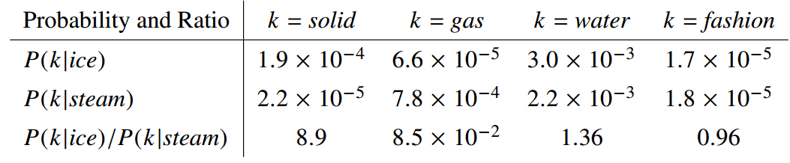
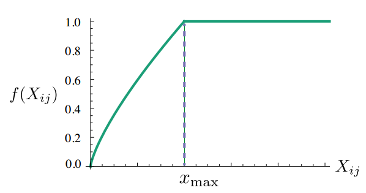

1. 概述
做自然语言处理的时候很多时候会用的Word Embedding，目前常用的方法是word2vec算法训练词向量。不过训练词向量的方法有很多，今天介绍GloVe算法。
GloVe：Global Vectors。
模型输入：语料库 corpus
模型输出：每个词的表示向量
2. 基本思想
2.1. 背景知识
要讲GloVe模型的思想方法，我们先介绍两个其他方法：
一个是基于奇异值分解（SVD）的LSA算法，该方法是topic model的一种，对word-document矩阵（矩阵的每个元素为tf-idf）进行奇异值分解，从而得到term的向量表示和document的向量表示。
当使用LSA训练词向量的时候，需要将word-document矩阵换成word-context矩阵$M_{nm}$，该矩阵的行是word，列是word的上下文，每一行是一个word与其上下文的共现次数，即在整个语料库中的全局统计特征。矩阵中各元素的值还有其他更优的取值方法，请参见Improving Distributional Similarity with Lessons Learned from Word Embeddings的第一二部分。
对$M_{nm}$奇异值分解$M_{nm}=U_{nk}\Sigma_{kk}V_{km}^T$,取其$\Sigma$前$d$个主要元素，则
$$
M_{nm} \approx U_{nd}\Sigma_{dd}V_{dm}^T
$$
公式的右边可以分解为两部分
$$
W_{nd}=U_{nd}\Sigma_{dd}\\
C_{md}=V_{md}
$$
其中$W_{nd}$的每一行为一个word的词向量，$C_{md}$的每一行为一个context的向量。
关于LSA，在斯坦福大学的自然语言的课程的第三次课程中有涉及 CS224n: Natural Language Processing with Deep Learning
另一个方法是word2vec)算法，该算法可以分为skip-gram 和 continuous bag-of-words（CBOW）两类,但都是基于局部滑动窗口计算的。即，该方法利用了局部的上下文特征（local context）
关于word2vec，在斯坦福大学的自然语言的课程的第三次课程中有涉及 CS224n: Natural Language Processing with Deep Learning
- word2vec 使用固定的window遍历整个语料库
- 使用每个词(center word)的上下文(surrounding words)预测该这个词(center word)(CBOW模型)
- word2vec预测每一个词(center word)的时候都利用了上下文中单词之间的共现关系(note：没有使用两个词在整个语料库中的共现次数)
LSA总结：
- 训练速度快
- 有效利用了全局统计特征
- Primarily used to capture word similarity
word2vec总结：
- Scales with corpus size
- 没有使用全局统计特征
- Can capture complex patterns beyond word similarity
2.2. GloVe模型的思想
LSA和word2vec作为两大类方法的代表，一个是利用了全局特征的矩阵分解方法，一个是利用局部上下文的方法。GloVe将这两类方法的优点结合到了一起，特点如下：
Fast training
Scalable to huge corpora
Good performance even with small corpus, and small vectors
GloVe模型就是将这两中特征合并到一起的，即使用了语料库的全局统计（overall statistics）特征，也使用了局部的上下文特征（即滑动窗口）。为了做到这一点GloVe模型引入了Co-occurrence Probabilities Matrix。
首先引入word-word的共现矩阵$X$，
$X$的元素$X_{ij}$是语料库中出现在word $i$上下文中的word $j$ 的次数；
$X_i=\sum_{k}{X_{ik}}$,是出现在word $i$ 上下文中的所有word的总次数；
$P_{ij}=P\left(j\vert{i}\right)=\frac{X_{ij}}{X_i}$,是word $j$出现在word $i$ 上下文的概率。
由以上概念引申出共现概率矩阵（Co-occurrence Probabilities Matrix），以下为论文中的例子：
-
该矩阵的第一个元素为ice出现时solid出现的概率，第二个元素为ice出现时gas出现的概率，以此类推。
由Co-occurrence Probabilities Matrix可以看出$Ratio=\frac{P_{ik}}{P_{jk}}$的取值是有一定的规律的。文章对该规律进行了总结：
| ratioi,j,k的值 | 单词j,k相关 | 单词j,k不相关 |
|---|---|---|
| 单词i,k相关 | 趋近1 | 很大 |
| 单词i,k不相关 | 很小 | 趋近1 |
也就是说Ratio值能够反映word之间的相关性，而GloVe模型就是利用了这个Ratio值。
再明确一下，GloVe模型的目标就是获取每一个word的向量表示v。不妨假设现在已经得到了word $i, j, k$ 的词向量$w_i, w_j, w_k$。GloVe认为，这三个向量通过某种函数的作用后所呈现出来的规律和$Ratio=\frac{P_{ik}}{P_{jk}}$具有一致性，即相等，也就可以认为词向量中包含了共现概率矩阵中的信息。
假设这个未知的函数是$F$,则:
$$F(w_i, w_j, w_k)=\frac{P_{ik}}{P_{jk}}$$
此处可以类比word2vec的基本思想（以基于哈弗曼树的CBOW为例），假设word $i$，和其context words的词向量已知，通过一层神经网络作用于context words的向量得到的结果与word $i$在哈夫曼树中的位置具有一致性。
3. 模型推导
公式
$$
F(w_i, w_j, w_k)=\frac{P_{ik}}{P_{jk}}
$$
右侧的$\frac{P_{ik}}{P_{jk}}$可以通过统计求的；
左侧的$w_i, w_j, w_k$是我们模型要求的量；
同时函数$F$是未知的。
如果能够将函数F的形式确定下来，就可以通过优化算法求解词向量了。那么GloVe模型的作者是怎么将F确定下来的呢？个人觉着这个过程真是脑洞大开，反正我是想不到。
$\frac{P_{ik}}{P_{jk}}$考察了$i, j, k$三个word两两之间的相似关系，不妨单独考察$i, j$ 两个词和他们词向量$w_i, w_j$，线性空间中的相似关系自然想到的是两个向量的差$(v_i-v_j)$。 所以F函数的形式可以是
$$
F(w_i - w_j, w_k)=\frac{P_{ik}}{P_{jk}}
$$$\frac{P_{ik}}{P_{jk}}$是一个标量，而F是作用在两个向量上的，向量和标量之间的关系自然想到了使用内积。所以F函数的形式可以进一步确定为
$$
F((w_i - w_j)^T w_k)=F(w_i^T w_k- w_j^T w_k)=\frac{P_{ik}}{P_{jk}}
$$到此为止模型公式的形式是 $F(w_i^T w_k- w_j^T w_k)=\frac{P_{ik}}{P_{jk}}$。 左边是差，右边是商，模型通过将F取作exp来将差和商关联起来
$$
exp(w_i^T w_k- w_j^T w_k)=\frac{exp(w_i^T w_k)}{exp(w_j^T w_k)}=\frac{P_{ik}}{P_{jk}}
$$现在只需要让分子分母分别相等上式就能够成立，所以
$$
exp(w_i^T w_k)=P_{ik} \\
exp(w_j^T w_k)=P_{jk}
$$所以只需要在整个文本库中考察$exp(w_i^T w_k)=P_{ik}=\frac{X_{ik}}{X_i}$ ，即
$$
w_i^T w_k=log(\frac{X_{ik}}{X_i}) = logX_{ik} - logX_i
$$作为向量，交换$i$ 和$k$ 的顺序 $w_i^T w_k$ 和$w_k^T w_i$ 是相等的，即公式左边对于$i$ 和$k$ 的顺序是不敏感的，但是公式右边交换$i$ 和$k$ 的顺序$ logX_{ik} - logX_i \ne logX_{ki} - logX_k $ 。为了解决这个对称性问题，模型引入了两个偏执项 $b_i, b_k$,从而将模型变成了
$$
logX_{ik} = w_i^T w_k + b_i + b_k
$$
其中$b_i $中包含了$logX_k$,所以公式中没有显示的写明这一项，为了保持模型的对称性，又加入了 $b_k$.上面的公式只是理想情况下，在实际实验中左右两边只能要求接近。从而就有了代价函数（cost function）
$$
J= \sum_{ik}(w_i^T w_k + b_i + b_k -logX_{ik})^2
$$根据经验，如果两个词共同出现的次数越多，那么这两个词在代价函数中的影响就应该约大，所以可以根据两个词共同出现的次数设计一个权重项来对代价函数中的每一项进行加权：
$$
J= \sum_{ik}f(X_{ik})(w_i^T w_k + b_i + b_k -logX_{ik})^2
$$
模型认为权重函数$f$应该符合以下三个特点，1. $f(0)=0$ （如果两个词没有共同出现过，权重就是0）；2. $f(x)$必须是非减函数（两个词共同出现的次数多，反而权重变小了，违反了设置权重项的初衷）；3. $f(x)$对于较大的$x$不能取太大的值（就像是汉语中“的”这个字，在很多文章中都会出现很多次，但是其在文中的重要程度非常小）。综合这三条特点的$f(x)$定义为：
$$
f(x)=\left\{\begin{aligned} (\frac{x}{x_{max}})^\alpha &, if \; x<x_{max} \\1&,\;otherwise \end{aligned}\right.
$$

根据经验，GloVe作者认为$x_{max}=100$, $\alpha=\frac34$是一个比较好的选择。
note：本文是主要是基于原始paper论述，但也局限于个人知识面和理解水品，里面掺杂了一些个人的观点，如有错误，请谅解
参考文献
- LSA
- Improving Distributional Similarity with Lessons Learned from Word Embeddings
- CS224n: Natural Language Processing with Deep Learning
- word2vec 中的数学原理详解
- GloVe: Global Vectors for Word Representation paper
- GloVe: Global Vectors for Word Representation tutorial
- 理解GloVe模型（Global vectors for word representation）